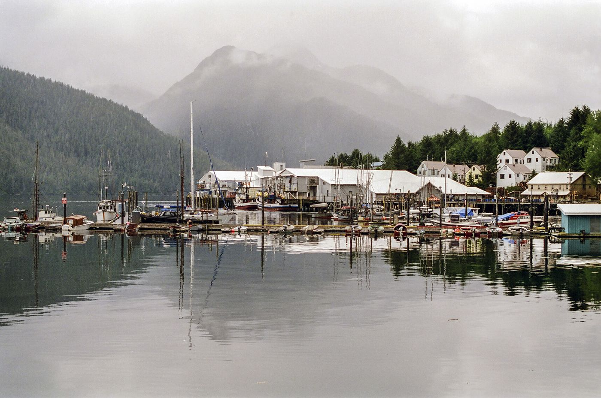
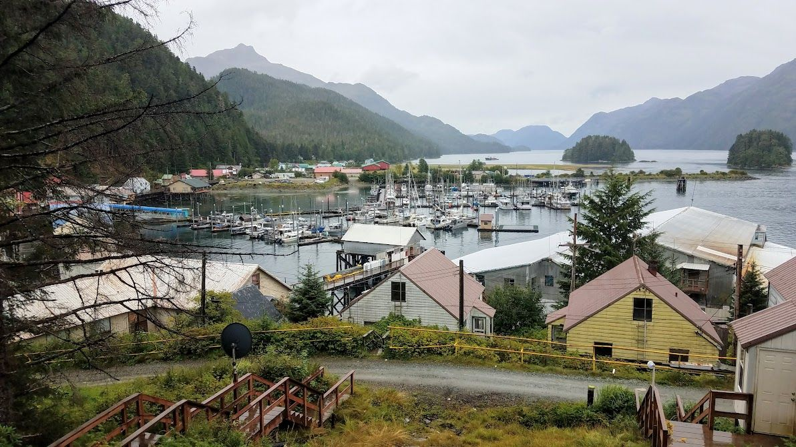

Directory / Southeast Alaska / Pelican, AK
Pelican tides — Pelican Harbor, Lisianski Inlet & Cross Sound
High and low tides for the coming week from NOAA station 9452611 (Pelican Harbor, Lisianski Inlet — 57.9578, -136.2268). Times are local (AKST/AKDT). Heights are feet above Mean Lower Low Water (MLLW). Pelican is a boardwalk town on Lisianski Inlet, on the northwest side of Chichagof Island. It is about 100 miles west of Juneau and 90 miles north of Sitka, and about 15 NM by water south of Elfin Cove through Lisianski Strait and Cross Sound. There are no roads in. Salmon Way, the boardwalk, runs about a mile along the shore on pilings. You arrive by floatplane, by the Highliner Express catamaran, or on the occasional state ferry. The F/V Pelican came into the inlet on September 26, 1938 to start building a cold storage close to the troll grounds off Yakobi Island. The town still uses the plant’s old slogan, “Closest to the Fish.”
A 16-ft tide drop, four tidal grids, a short-hours fuel dock & an easterly blow
The tide swing. NOAA lists 9452611 as a harmonic (reference) station (chart 17303), so its predictions are computed for Pelican directly, not as offsets from another port. In the NOAA predictions fetched 2026-11-23, Wednesday, November 25, 2026 has a 12.8 ft high at 12:30 PM and then a −3.0 ft low at 7:27 PM. That is a drop of about 15.9 ft in seven hours. Christmas Eve is bigger: 12.9 ft at 12:21 PM to −3.2 ft at 7:19 PM (about 16.1 ft), the lowest tide of the year’s last five weeks. Minus tides fall every evening Nov 24–29, Dec 5–12 and Dec 20–28, mostly between about 4 PM and 11 PM, after dark.
Grids. Pelican has no travelift or boatyard. The Northwest Boat Travel guide lists four tidal grids in the harbor. Pelican City Code 14.08.180 says someone able to look after the boat must stay with it the whole time it is on a grid, and no boat may stay more than 36 hours without written consent from the harbormaster or city clerk. Grids are used at your own risk. In the next five weeks the best daylight lows are only about 0.9 ft at 3:03 PM Sat Dec 19 and 1.5 ft at 3:08 PM Thu Dec 3. Both fall just before the roughly 3:30 PM sunset, so bring headlamps. The nearest haul-outs are in Hoonah, Sitka and Juneau.
Fuel & harbor. Pelican Fuels (city-run, VHF 16 or 907-735-2211) is open only Monday, Wednesday and Friday 9–12 and 1–4, and Saturday 9–12 (hours effective 9/19/2026). Call-outs cost $50 after hours and $200 on holidays. The city says the fuel dock is closed for Thanksgiving, Thu–Fri Nov 26–27, and reopens Saturday Nov 28. The dock sells diesel #1 and #2, gasoline and propane. The harbormaster answers on VHF 16 or 907-735-2202. All boats pay the daily transient rate, boats over 65 ft have a 72-hour limit, and flake ice is sold by the tote with 48 hours’ notice.
Weather. api.weather.gov puts the station, the harbor and all of Lisianski Inlet in PKZ022 Cross Sound. West of Lisianski Strait, off Yakobi Island, is PKZ643 Cape Edgecumbe to Cape Spencer out to 15 NM. The forecasts issued Monday, Nov 23, 2026 carry a Small Craft Advisory in Cross Sound through Tuesday, with E wind 30 kt tonight, NE 25 kt Tuesday and seas around 6–7 ft through Wednesday. The outside-coast advisory runs through late Tuesday night, with seas building to 13 ft Tuesday night and Wednesday. FAA remarks for the seaplane base warn of strong NW and SE winds in the inlet. Check the live forecasts below before you head out through Lisianski Strait.
Computed from NOAA CO-OPS hi/lo predictions for 9452611 (2026-11-24 through 2026-12-31) and its station metadata (reference station, chart 17303); NWS Juneau coastal and inside-waters forecast text; api.weather.gov zone lookups at 57.958,-136.228, 57.97,-136.25, 58.00,-136.30 and 57.95,-136.21 (PKZ022) and 57.80,-136.45, 57.85,-136.55 and 57.90,-136.55 (PKZ643); FAA WeatherCams site data for sunrise and sunset; City of Pelican harbor, fuel and home-page notices; Pelican City Code ch. 14.08; the Northwest Boat Travel guide (2017); FAA NFDC record PEC. All checked 2026-11-23. Not for navigation.
Pelican then & now
Historic


Current


Official NOAA predictions Station home NOAA chart viewer NOAA chart 17303 viewer View on Windy
Port Sponsor — Pelican, AK
Top placement for lodges, charters, fish buyers, fuel and marine businesses on Lisianski Inlet and the Yakobi Island outer coast.
$25–$50 / month
Tide data: NOAA CO-OPS station 9452611 (Pelican Harbor, Lisianski Inlet; harmonic reference station), predictions (hi/lo, MLLW, local standard/daylight time). Refreshed with each nightly build; the marine-weather snapshot time below shows the latest fetch. For nearby ports, see Elfin Cove tides and the NOAA station pages for Hoonah (9452438) and Bartlett Cove (9452534).
Tuesday, November 24, 2026
| Tide | Time (local) | Height (MLLW) |
|---|---|---|
| High | 12:27 AM | 9.6 ft |
| Low | 5:44 AM | 2.9 ft |
| High | 11:47 AM | 12.7 ft |
| Low | 6:41 PM | -2.9 ft |
Wednesday, November 25, 2026
| Tide | Time (local) | Height (MLLW) |
|---|---|---|
| High | 1:15 AM | 9.7 ft |
| Low | 6:28 AM | 3.1 ft |
| High | 12:30 PM | 12.8 ft |
| Low | 7:27 PM | -3.0 ft |
Thursday, November 26, 2026
| Tide | Time (local) | Height (MLLW) |
|---|---|---|
| High | 2:02 AM | 9.6 ft |
| Low | 7:13 AM | 3.2 ft |
| High | 1:15 PM | 12.7 ft |
| Low | 8:14 PM | -2.8 ft |
Friday, November 27, 2026
| Tide | Time (local) | Height (MLLW) |
|---|---|---|
| High | 2:52 AM | 9.4 ft |
| Low | 8:02 AM | 3.4 ft |
| High | 2:03 PM | 12.2 ft |
| Low | 9:02 PM | -2.2 ft |
Saturday, November 28, 2026
| Tide | Time (local) | Height (MLLW) |
|---|---|---|
| High | 3:43 AM | 9.2 ft |
| Low | 8:56 AM | 3.7 ft |
| High | 2:56 PM | 11.3 ft |
| Low | 9:53 PM | -1.3 ft |
Sunday, November 29, 2026
| Tide | Time (local) | Height (MLLW) |
|---|---|---|
| High | 4:38 AM | 9.1 ft |
| Low | 10:00 AM | 3.8 ft |
| High | 3:55 PM | 10.2 ft |
| Low | 10:48 PM | -0.4 ft |
Monday, November 30, 2026
| Tide | Time (local) | Height (MLLW) |
|---|---|---|
| High | 5:36 AM | 9.2 ft |
| Low | 11:16 AM | 3.8 ft |
| High | 5:07 PM | 9.1 ft |
| Low | 11:46 PM | 0.6 ft |
Tuesday, December 1, 2026
| Tide | Time (local) | Height (MLLW) |
|---|---|---|
| High | 6:35 AM | 9.4 ft |
| Low | 12:41 PM | 3.4 ft |
| High | 6:30 PM | 8.2 ft |
Marine weather & cameras
NWS marine forecast — Cross Sound (PKZ022)
Issued 742 PM AKST Mon Nov 23 2026. Snapshot fetched 2026-11-23 21:27 AKST from NWS text product. Official zone forecast · Raw text
...SMALL CRAFT ADVISORY THROUGH TUESDAY...
- .TONIGHT...E wind 30 kt. Seas 6 ft. Rain.
- .TUE...NE wind 25 kt. Seas 6 ft. Rain.
- .TUE NIGHT...NE wind 25 kt diminishing to 20 kt late. Seas 6 ft. Rain.
- .WED...NE wind 20 kt. Seas 7 ft. Rain.
- .WED NIGHT...NE wind 20 kt. Seas 6 ft. Rain.
- .THU...NE wind 15 kt. Seas 5 ft.
- .FRI...S wind 10 kt. Seas 5 ft.
- .SAT...S wind 10 kt. Seas 5 ft.
NWS marine forecast — Cape Edgecumbe to Cape Spencer out to 15 NM (PKZ643)
Issued 308 PM AKST Mon Nov 23 2026. Snapshot fetched 2026-11-23 21:27 AKST from NWS text product. Official zone forecast · Raw text
...SMALL CRAFT ADVISORY THROUGH LATE TUESDAY NIGHT...
- .TONIGHT...E wind 30 kt. Seas 10 ft.
- .TUE...E wind 25 kt. Seas 12 ft. S swell.
- .TUE NIGHT...E wind 25 kt diminishing to 20 kt late. Seas 13 ft. S swell.
- .WED...E wind 20 kt. Seas 13 ft. S swell.
- .WED NIGHT...E wind 20 kt. Seas 12 ft. S swell.
- .THU...E wind 15 kt. Seas 12 ft.
- .FRI...S wind 15 kt. Seas 9 ft.
- .SAT...S wind 10 kt. Seas 8 ft.
Nearby NDBC observation — Pelican (PEXA2, Marine Exchange of Alaska, Pelican harbor)
wind 150°, 1 kt, gust 4 kt, air 42°F, 997.6 hPa
Observation time 2026-11-23 21:02 AKST (converted to AKST). Attribution: NOAA NDBC station PEXA2. Snapshot fetched 2026-11-23 21:27 AKST.
Nearby NDBC observation — George Island (GEXA2, Marine Exchange of Alaska, Port Althorp entrance, about 15 NM north)
wind 70°, 15 kt, gust 24 kt, air 40°F
Observation time 2026-11-23 21:02 AKST (converted to AKST). Attribution: NOAA NDBC station GEXA2. Snapshot fetched 2026-11-23 21:27 AKST.
Nearby NDBC observation — Cape Spencer (CSXA2, Marine Exchange of Alaska, mouth of Cross Sound)
wind 90°, 12 kt, gust 26 kt, air 40°F
Observation time 2026-11-23 21:02 AKST (converted to AKST). Attribution: NOAA NDBC station CSXA2. Snapshot fetched 2026-11-23 21:27 AKST.
Nearby NDBC observation — Fairweather Ground buoy (46083, offshore about 60 NM WNW)
wind 80°, 10 kt, gust 16 kt, air 47°F, 994.4 hPa, water 48°F
Observation time 2026-11-23 20:40 AKST (converted to AKST). Attribution: NOAA NDBC station 46083. Snapshot fetched 2026-11-23 21:27 AKST.
Harbor webcams
- FAA WeatherCams — Pelican (camera site at the Pelican seaplane base looking over Lisianski Inlet; the FAA listed this site as in maintenance on 2026-11-23, so images may be missing; link only, not embedded)
- FAA WeatherCams — Cape Spencer (views from the Cape Spencer light station into Cross Sound and out to the Gulf, about 20 NM northwest)
The FAA camera-site pages for Pelican (site 172) and Cape Spencer (267) loaded on 2026-11-23 around 9:20 PM AKST. FAA site data showed sunrise about 8:11 AM and sunset about 3:31 PM AKST at Pelican for Nov 24, so expect dark frames on winter nights. We found no other free public camera on the Pelican harbor. Lodges or businesses with a public cam: email us and we will link it.
Pelican boater notes (official links)
- City of Pelican — Pelican Harbor: daily transient rates for all vessels ($24.75 under 25 ft up to $71.50 for 66–80 ft; $0.97/ft over 81 ft); 72-hour limit over 65 ft; 30 A and 50 A power ($20/$30 a day, not at every meter stand); water at the top of the ramp and on B, C and D floats (bring your own hose); soap and quarters for the public washers, dryers and showers from the harbor office or City Hall. Winter harbor-office hours are short. City Hall (907-735-2202, Mon–Fri 8–12 and 1–3:30) handles harbor business when the office is closed, or you can use the moorage drop box.
- Pelican Fuels: Mon/Wed/Fri 9–12 and 1–4, Sat 9–12; VHF 16 or 907-735-2211; diesel #1 and #2, gasoline, propane by the pound or 100-lb bottle; 5¢/gal off 100+ gallons; sales tax 4% Oct–Apr and 6% May–Sep.
- City of Pelican news: Thanksgiving closures (Nov 26–27; fuel reopens Sat Nov 28); AMHS sailings listed for Tue Dec 15, 2026, Sun Jan 3, Apr 4 and Apr 18, 2027 (subject to change; confirm with AMHS); Yakobi Fisheries is not offering freight service on the December ferry.
- Pelican City Code ch. 14.08 (harbor use): grid rules (attend the vessel at all times; 36-hour limit without written consent; use at own risk) and moorage rules.
- National Fisherman Pilothouse Guide — Pelican: VHF 16 and 10; restaurant, bars, library, ice, laundry, showers and internet; hospitals in Sitka or Juneau; USCG vessels from Juneau and aircraft from Sitka. Some contacts in that guide are older than the city’s site, so use the city numbers above.
- FAA Pelican Seaplane Base (PEC / PPEC): operating area in Lisianski Inlet; boat activity in summer; boats may be tied to the float ramp; strong NW and SE winds; no fuel. The FAA showed an active construction notice in November 2026. Give floatplanes room.
- Highliner Express: a 50-ft catamaran carrying public passengers and freight between Pelican and Juneau. It leaves Pelican at 7 AM and reaches Juneau’s Statter Harbor around 11 AM, and returns from Juneau by 2 PM to arrive around 6 PM. Freight goes through the Delta Western (Gitkov) dock in Auke Bay. Check which days it sails.
- ADF&G 2026 Southeast shore-based processors by port: Highliner Lodge – Fish House (F14681) and Yakobi Fisheries (F10294) at Pelican; Elfin Cove Fish Co. at Elfin Cove.
- NOAA ENC chart viewer and chart 17303 (Lisianski Inlet and Strait), plus chart 17302 for Cross Sound. We link to NOAA’s viewers and do not host charts.
Local marine & shore directory
Verified public listings only. List free · Get featured
Marine services
Moorage & marinas
Seafood processors & buyers
Fuel docks
Shipyards & haul-outs
Boat repair & mechanics
No verified listing yet — list your business free.
Marine suppliers & chandleries
Electronics sales & installation
No verified listing yet — list your business free.
Welding & fabrication
No verified listing yet — list your business free.
Canvas & upholstery
No verified listing yet — list your business free.
Surveyors
No verified listing yet — list your business free.
Towing & salvage
No verified listing yet — list your business free.
Ice & bait
Fishing charters
Ashore for boaters
Groceries & provisioning
Hardware
No verified listing yet — list your business free.
Liquor stores
Laundromats
Showers
Lodging
Restaurants
Medical clinics
Pharmacies
No verified listing yet — list your business free.
Post office & shipping
Airport & floatplane
Propane
Auto & truck rental
No verified listing yet — list your business free.
We checked these listings on 2026-11-23 against public sources: the City of Pelican harbor, fuel and contact pages, Pelican City Code, the ADF&G 2026 Southeast shore-based processor map and NOAA Fisheries’ 2025 federal processor permit list, the Alaska ABC Board’s September 2025 license-renewal agenda, the Alaska business registry, Alaska.org, the FAA airport record for PEC, USPS, SEARHC, and each business’s own website where one exists. Pelican is small and seasonal: lodges and charters run roughly May to September, and in winter the fuel dock, harbor office and some shops keep short hours. Call ahead or hail on VHF 16. The Elfin Cove listing is about 15 NM north by water. Know a business we missed? Email us or list it free.
Local news — Pelican, AK
Plain links to local outlets. Always check the source for the latest. Local news partners welcome.
Free weekly tides & marine weather
Get a short email for your port. We do not sell your email. Privacy.
Mailing list powered by Buttondown.
Boating gear on Amazon
As an Amazon Associate I earn from qualifying purchases.
Helpful search links for common gear. Prices and availability are on Amazon.
Other Alaska ports
Sources
- Tide predictions: NOAA CO-OPS station 9452611 Pelican Harbor, Lisianski Inlet via the CO-OPS data API (hi/lo, MLLW, local time)
- Marine forecasts: NWS Juneau coastal waters text products PKZ022 and PKZ643; zones confirmed with api.weather.gov point lookups on 2026-11-23
- NDBC observations: PEXA2 Pelican, GEXA2 George Island and CSXA2 Cape Spencer (Marine Exchange of Alaska), 46083 Fairweather Ground buoy; the refresh shows a station as unavailable when its latest report is more than a day old
- Harbor: City of Pelican harbor, fuel, contact and news pages; Pelican City Code ch. 14.08; National Fisherman Pilothouse Guide; Northwest Boat Travel guide (2017) — all checked 2026-11-23
- FAA WeatherCams public camera pages for Pelican (site 172) and Cape Spencer (267); FAA NFDC airport record PEC — checked 2026-11-23
- ADF&G 2026 Southeast Alaska shore-based processors by port; NOAA Fisheries 2025 federal processor permits
- History: Norm Carson, “A glimpse of Pelican’s beginning” (January 2009), on pelican.net
- Directory:
data/businesses.csvrows for port_slug=pelican, each with its public source URL (verified 2026-11-23) - Photos: Gillfoto, circa 1996 (CC BY-SA 4.0), and Kelsey Breseman, 2019 (CC BY-SA 4.0), via Wikimedia Commons. Graphics: original Pacific Tides artwork (Lisianski Inlet mast, tidal-grid tide marker, king salmon and flasher).